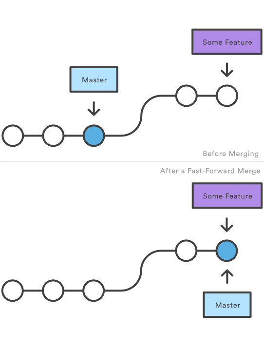
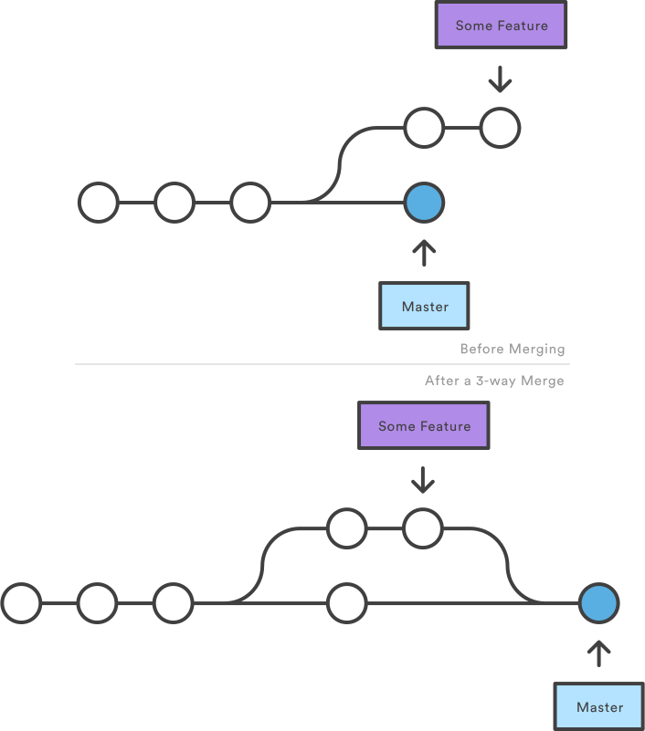
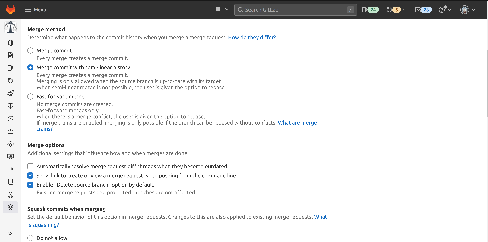

Git workflows
Agenda
- Overview over Git workflows
- Working with branches
- switching branches
- merging branches
- rebasing
- Keeping your history clean
Overview over Git workflows
Centralized workflow
- Uses a single master branch
- All commits are directly pushed to master
Feature branch workflow
- Each feature is developed on dedicated branch
- When a feature is finished, it is merged into master
Feature + release branch workflow
- For each release, a branch is maintained
Further workflows
Working with branches
Let's consider the following project:
~/MyProject$ ls
employee.py test_employee.py
~/MyProject$ git log --oneline
b41cb94 (HEAD -> master) test employee class
59579ae add employee class
# employee.py
class Employee:
def __init__(self, name: str, salary: float) -> None:
self.name_ = name
self.salary_ = salary
# test_employee.py
from employee import Employee
def test_employee():
employee = Employee(name="person", salary=5000.0)
assert employee.name_ == "person"
assert employee.salary_ == 5000.0
Now we want to change this to use the property decorator:
# employee.py
class Employee:
def __init__(self, name: str, salary: float) -> None:
self.__name = name
self.__salary = salary
@property
def name(self):
return self.__name
@property
def salary(self):
return self.__salary
... and we modify the test accordingly
# test_employee.py
from employee import Employee
def test_employee():
employee = Employee(name="person", salary=5000)
assert employee.name == "person"
assert employee.salary == 5000.0
Let's make a new branch for our upcoming commit...
~/MyProject$ git switch --create feature/employee-property-decorator
Switched to a new branch 'feature/employee-property-decorator'
~/MyProject$ # you now can switch to master and back
~/MyProject$ git switch master
Switched to branch 'master'
~/MyProject$ git switch feature/employee-property-decorator
Switched to branch 'feature/employee-property-decorator'
if your git version is below 2.23, you should use
git checkout instead of
git switch with
-b instead of --create
... and commit them
~/MyProject$ # modify the files to use property decorator ...
~/MyProject$ git commit -m "[employee] use property decorator" employee.py test_employee.py
[feature/employee-property-decorator c82e370] [employee] use property decorator
2 files changed, 12 insertions(+), 4 deletions(-)
~/MyProject$ git log --oneline
c82e370 (HEAD -> feature/employee-property-decorator) [employee] use property decorator
cbfde01 (master) test employee class
15715ca add employee class
We see now that HEAD points to our feature branch, which is one commit ahead of master
Now let us merge the feature into master
~/MyProject$ git switch master
Switched to branch 'master'
~/MyProject$ git merge feature/employee-property-decorator
Updating cbfde01..c82e370
Fast-forward
employee.py | 12 ++++++++++--
test_employee.py | 4 ++--
2 files changed, 12 insertions(+), 4 deletions(-)
~/MyProject$ git log --oneline
c82e370 (HEAD -> master, feature/employee-property-decorator) [employee] use property decorator
cbfde01 test employee class
15715ca add employee class
Our feature is merged, let's delete the branch and look at the history as a graph
~/MyProject$ git branch -d feature/employee-property-decorator
Deleted branch feature/employee-property-decorator (was c82e370).
~/MyProject$ git log --all --decorate --oneline --graph
* c82e370 (HEAD -> master) [employee] use property decorator
* cbfde01 test employee class
* 15715ca add employee class
There is no trace left of our feature branch!
The reason is that Git did a fast-forward-merge
Fast-forward merge
Let's try something else. But first, we have to revert the changes...
~/MyProject$ git reset --soft cbfde01
~/MyProject$ git switch --create feature/employee-property-decorator
Switched to a new branch 'feature/employee-property-decorator'
~/MyProject$ git commit -m "[employee] use property decorator"
[feature/employee-property-decorator 7c537ab] [employee] use property decorator
2 files changed, 12 insertions(+), 4 deletions(-)
~/MyProject$ git switch master
Switched to branch 'master'
This time, we tell Git not to use fast-forward merge
~/MyProject$ git merge --no-ff feature/employee-property-decorator
Merge made by the 'recursive' strategy.
employee.py | 12 ++++++++++--
test_employee.py | 4 ++--
2 files changed, 12 insertions(+), 4 deletions(-)
~/MyProject$ git log --all --decorate --oneline --graph
* 1a2acd5 (HEAD -> master) Merge branch 'feature/employee-property-decorator'
|\
| * 7c537ab (feature/employee-property-decorator) [employee] use property decorator
|/
* cbfde01 test employee class
* 15715ca add employee class
We can now still see that we developed the feature on a branch!
... even if we delete the branch ...
~/MyProject$ git branch -d feature/employee-property-decorator
Deleted branch feature/employee-property-decorator (was 7c537ab).
~/MyProject$ git log --all --decorate --oneline --graph
* 1a2acd5 (HEAD -> master) Merge branch 'feature/employee-property-decorator'
|\
| * 7c537ab [employee] use property decorator
|/
* cbfde01 test employee class
* 15715ca add employee class
With feature branches, a clearer git history can be achieved when using strategies that use 3-way-merges
3-way merges introduce merge commits that have 2 parents
3-way merge
Fast-forward vs. 3-way
- Fast-forward not possible when branches have diverged (rebase required)
- 3-way merges introduce merge commits, leaving traces of feature branches in history
Quick summary
- List available branches with
git branch - Change to another branch with
git switch - Change to a new branch with
git switch --create - Merge a branch into current one with
git merge - Merge avoiding fast-forwarding with
git merge --no-ff
A few examples
Consider this helper script
# setup_merge_example.py
import os
import subprocess
from time import sleep
def run(cmd: list):
subprocess.run(cmd, check=True)
def touch(filename: str):
with open(filename, "w") as file:
file.write("")
def commit(message: str):
file = f"{message}.txt"
touch(file)
run(["git", "add", file])
sleep(2) # ensure the time stamps of commits are distinguishable
run(["git", "commit", "-m", message, file])
def switch_create(branch: str):
run(["git", "switch", "--create", branch])
def switch(branch: str):
run(["git", "switch", branch])
folder = "example"
os.makedirs(folder)
os.chdir(folder)
run(["git", "init"])
commit("A")
switch_create("feature")
commit("B")
switch("master")
commit("C")
switch("feature")
commit("D")
Let's see the resulting graph
~$ python3 setup_merge_example.py
~$ # output of switches & commits ...
~$ cd example
~/example$ git log --all --decorate --oneline --graph
* 641744a (HEAD -> feature) D
* 514dfd5 B
| * 30f01bf (master) C
|/
* 9dc9b23 A
Now, let us merge feature into master
~/example$ git switch master
Switched to branch 'master'
~/example$ git merge feature
Merge made by the 'recursive' strategy.
B.txt | 0
D.txt | 0
2 files changed, 0 insertions(+), 0 deletions(-)
create mode 100644 B.txt
create mode 100644 D.txt
~/example$ git log --all --decorate --oneline --graph
* 36046dd (HEAD -> master) Merge branch 'feature'
|\
| * 641744a (feature) D
| * 514dfd5 B
* | 30f01bf C
|/
* 9dc9b23 A
Note that fast-forward was not possible
...and look at the log
~/example$ git branch -d feature
Deleted branch feature (was 641744a).
~/example$ git log --oneline
36046dd (HEAD -> master) Merge branch 'feature'
641744a D
30f01bf C
514dfd5 B
9dc9b23 A
Note that master was A-C and is now A-B-C-D
The chronology of the commits is preserved
What if our commits modify an existing file?
# setup_merge_example.py
import os
import subprocess
from time import sleep
def run(cmd: list):
subprocess.run(cmd, check=True)
def touch(filename: str):
with open(filename, "w") as file:
file.write("")
def append(text: str, filename: str):
with open(filename, "a") as file:
file.write(text + '\n')
def commit(message: str):
file = "file.txt"
if not os.path.exists(file):
touch(file)
append(message, file)
run(["git", "add", file])
sleep(2) # ensure the time stamps of commits are distinguishable
run(["git", "commit", "-m", message, file])
def switch_create(branch: str):
run(["git", "switch", "--create", branch])
def switch(branch: str):
run(["git", "switch", branch])
folder = "example"
os.makedirs(folder)
os.chdir(folder)
run(["git", "init"])
commit("A")
switch_create("feature")
commit("B")
switch("master")
commit("C")
switch("feature")
commit("D")
... we get the same graph
~$ python3 setup_merge_example.py
~$ # output of switches & commits ...
~$ cd example
~/example$ git log --all --decorate --oneline --graph
* da658c3 (HEAD -> feature) D
* 0982f75 B
| * 7942845 (master) C
|/
* c63ba94 A
... but, we get merge conflicts
~/example$ git switch master
Switched to branch 'master'
~/example$ git merge feature
Auto-merging file.txt
CONFLICT (content): Merge conflict in file.txt
Automatic merge failed; fix conflicts and then commit the result.
We have modified the same lines of "file.txt" and Git cannot merge automatically
git status tells us which files are affected
... and the file contains info on the unmerged changes
Git finds "C" in HEAD, while "B" is found in the respective commit on feature
Now we manually have to bring the file into the state we want to have it
For instance, like this:
Now let us finish the merge
~/example$ git add file.txt
~/example$ git commit
[master 93d3491] Merge branch 'feature'
~/example$ git branch -d feature
Deleted branch feature (was da658c3)
~/example$ git log --oneline
93d3491 (HEAD -> master) Merge branch 'feature'
da658c3 D
7942845 C
0982f75 B
c63ba94 A
Note that the resulting history is the same, but there is an important difference...
Our merge commit now shows a diff reflecting our conflict resolution
An alternative: git rebase

Let's try this. First, we restore the example repo ...
~$ rm -rf example
~$ python3 setup_merge_example.py
~$ # output of switches & commits ...
~$ cd example
~/example$ git log --all --decorate --oneline --graph
* da658c3 (HEAD -> feature) D
* 0982f75 B
| * 7942845 (master) C
|/
* c63ba94 A
Then, we rebase our feature branch onto master ...
As before, git cannot automatically merge the changes...
Let's have a look at the content of our file
Note that "D" is not yet in here. Here, we are only resolving the conflict created in "B"!
Let's fix the conflict and continue the rebase
Applying commit "D" now leads to another conflict...
Commit "D" added "D" at the end after "B", but now "B" is followed by "C"
If we had chosen A-C-B in the resolution before, Git would not have been running into a conflict here!
Let's fix this one, too, and finalize the rebase
Now there is a linear history from A-D
We can now merge the feature without conflicts...
The result is a different history as before!
merge
rebase + merge
Rebase
- Conflicts may have to be resolved for each commit
- Rewrites history - new commits are made
- Leads to history sorted by feature
- Rebased branch has to be force-pushed
- Tests are guaranteed to pass after merge
Merge
- Conflicts are resolved in a single commit
- History remains in original chronology
What if there are multiple features?
merge
rebase + merge
GitLab allows you to enforce this workflow
A few things to consider when using workflows with feature branches
- Is the chronology of the commits important?
- Would you like to have a history sorted by feature?
- Are feature branches typically used by several people?
Using rebase upon git pull
Recall the problem of running out-of-sync with remote

Initial state: clean repository

git commit local changes

git fetch remote changes
Using rebase upon git pull
Git suggests to use git pull
~/dumux$ git status
On branch master
Your branch and 'origin/master' have diverged,
and have 2 and 1 different commits each, respectively.
(use "git pull" to merge the remote branch into yours)
This will create a merge commit on your local master branch!
Using rebase upon git pull
Alternative: git pull --rebase
~/dumux$ git pull --rebase origin master
From REPO_URL
* branch master -> FETCH_HEAD
First, rewinding head to replay your work on top of it...
Applying: COMMIT_MSG1
Applying: COMMIT_MSG2
We see the output as for rebase: your commits are placed after those that are different on origin/master. This does not create a merge commit. Note: REPO_URL and COMMIT_MSG are placeholders here
Using rebase upon git pull
The result looks like this
Initial state: clean repository
git commit local changes
git fetch remote changes

git pull --rebase
Keeping your history clean
Signs of a clean history
- Few fixup commits
- Descriptive commit messages
- On each commit, all tests pass
- One commit changes only one "thing"
Remove fixup commits
Before, we have seen how to use git reset to squash fixup commits:
~/MyProject$ git log --oneline
01de8c1 (HEAD -> master) fix typo
cf365ce add some other Text
fa642ee add some text
b81e157 add title
~/MyProject$ git reset --soft fa642ee
~/MyProject$ git commit -m "add some other text"
[master 4a4957f] add some other text
1 file changed, 1 insertion(+)
~/MyProject$ git log --oneline
4a4957f (HEAD -> master) add some other text
fa642ee add some text
b81e157 add title
Remove fixup commits
Branches now allow you to do interactive rebasing to achieve this. Let's assume the following history:
~/MyProject$ git log --all --decorate --oneline --graph
* 79f7001 (HEAD -> feature/add-text) fix typo
* 3a05e8f add some text
* 560d8be (master) add title
Remove fixup commits
Interactive rebase can be started with the (-i) option:
This opens an editor with the following:
Remove fixup commits
Let us choose f for "fixup":
... and then save and exit.
Remove fixup commits
The history is now stripped of the fixup commit, and the branch is ready to be merged
~/MyProject$ git rebase -i master
Successfully rebased and updated refs/heads/feature/add-text.
~/MyProject$ git log --all --decorate --oneline --graph
* 00fe38e (HEAD -> feature/add-text) add some text
* 560d8be (master) add title
Signs of a clean history
- Few fixup commits
- Descriptive commit messages
- On each commit, all tests pass
- One commit changes only one "thing"
Tests should always pass
Assume we introduce the changes related to the employee class like this:
~/MyProject$ git log --oneline
1c2a935 (HEAD -> master) [test][employee] use employee property
6e053ab [employee] use property decorator
b41cb94 test employee class
59579ae add employee class
While 6e053ab and 1c2a935 may have a clear logical separation, this caused a commit on which the test failed!
In this case, it is better to add both changes in one commit.
Signs of a clean history
- Few fixup commits
- Descriptive commit messages
- On each commit, all tests pass
- One commit changes only one "thing"
Commit only one thing
Consider these changes to the employee project:
~/MyProject$ git diff
diff --git a/employee.py b/employee.py
index 581fa6b..d74789e 100644
--- a/employee.py
+++ b/employee.py
@@ -1,5 +1,17 @@
class Employee:
def __init__(self, name: str, salary: float) -> None:
- self.name_ = name
- self.salary_ = salary
+ self.__name = name
+ self.__salary = salary
+
+ @property
+ def name(self):
+ return self.__name
+
+ @property
+ def salary(self):
+ return self.__salary
+
+ @name.setter
+ def name(self, new_name: str):
+ self.__name = new_name
diff --git a/test_employee.py b/test_employee.py
index adef316..004c1ab 100644
--- a/test_employee.py
+++ b/test_employee.py
@@ -4,5 +4,8 @@ from employee import Employee
def test_employee():
employee = Employee(name="person", salary=5000)
- assert employee.name_ == "person"
- assert employee.salary_ == 5000
+ assert employee.name == "person"
+ assert employee.salary == 5000
+
+ employee.name = "person2"
+ assert employee.name == "person2"
Commit only one thing
These changes comprise the following:
- change the names of attributes of employee.py
- export the attributes as properties with the decorator
- change the test to use the properties
- make the employee name settable
- test setting the employee name
The last two changes could be in separate commits as for instance:
"[employee] make name property settable"
"[test][employee] add test for name property setter"
Why the history matters
- Small commits are easier to review
- Commits with non-cohesive changes are difficult to review
- Descriptive messages reveal the steps of a feature implementation
Wrap-up I
- list available branches
git branch - change branches with
git switch - create new branches with
--create - merge branches with
git merge - avoid fast-forward merges with
--no-ff - rebase a branch with
git rebase - rebase upon pull with
git pull --rebase
Wrap-up II
- there are multiple approaches for Git workflows
- choose the simplest possible flow for your project
- think about your desired history layout early